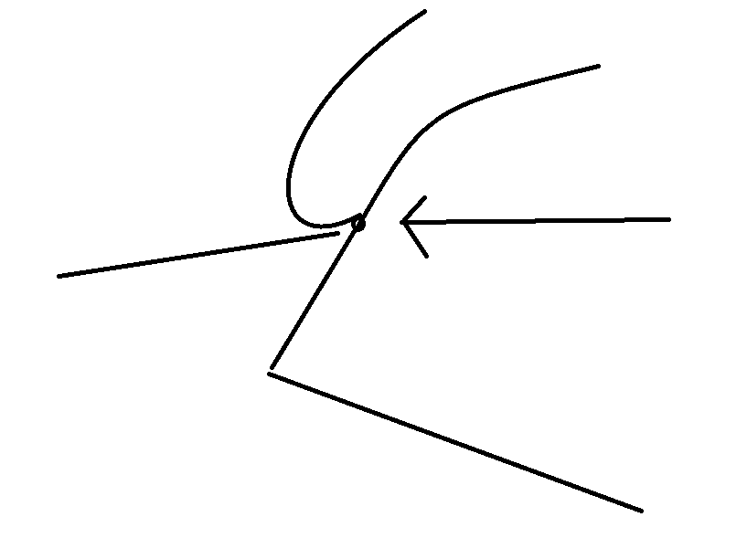
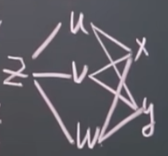

高等数学教程 （6）
多元函数微分法
平面点集
下面我们要引入多元函数，这就要求我们需要有点集的概念：我们定义一些点，如果满足一些特有的性质，就称之为他们是一个点集：
我们举个例子：一些点再一个半径为R的圆上：
由于在平面上更有扩展性，我们就需要引入跟一元函数一样的概念：领域，这一次指的是P周围的地方：记作
点有几种：在一个圈住的特定范围下：有外点（不属于），边界点（处于边界），内点（就属于里面）
对于这些集合：有开集，闭集（就是说白了：取不取等的问题），有有界集无界集的概念，这里不多做阐述。
N维空间
N维空间表示
说白了，就像二维空间只用两个分量表达就可以阐述完全一样。
多元函数的极限
比较一下：我们的一元函数的极限是单一主元趋向一个值：$x\rightarrow x_0$,一元函数也是这样的逼近！（从左边逼近，从右边逼近）。
那么多元函数又如何？（多元函数就像是：z=x+2y这样的玩意），注意到这一次我们的点可以在平面上移动而不是在线上移动！
这样的逼近方式是任意方式逼近的，这就让我们：可以直线逼近，可以曲线逼近！

如此：如果就算这样我们的极限值还是都不变：那么我们说函数的极限存在
举个例子：$f(x,y)=(x^2+y^2)\sin\frac{1}{x^2+y^2}$求解：
很容易看出：$\sin\frac{1}{x^2+y^2}$有界的，这样，函数极限怎么样都是0！
如果极限不满足任何方式逼近相等，那就不存在！
比如说：求解$\lim\limits_{(x,y)\rightarrow (x_0,y_0)}f(x,y)$
只需要：$y=kx$逼近:
而若是：$y=-kx$逼近：
这下显然不存在了！
偏导数
基本定义
在一元导数中，我们这样定义导数：
类似的，我们的多元函数不过就是多个主元一同影响函数值！这就是为什么我们的导数多了一个“偏”：如果说我们有一个函数$z=f(x,y)$，我们把目光聚焦在$x$上：我们就说$z$对$x$的偏导数就是这样定义的：
当然还有这个简单的写法：
1）$z_x’$ 2）$f’_x(x,y)$
试试看，对$y$的偏导又是如何？
实际上，我们直接其他变量视作常数就好了
1）$z=x^2+3xy+y^2$在（1,2）处求偏导:
带入值就好了！
几何含义
说白了还是切线，不过是什么方向上的切线而已：过对应点切面产生的曲线的切线
注意
对于一元函数来讲：可导一定连续！
对于二元函数来讲，可导不一定连续（因为此时退化为偏导，只是一个方向才是连续，其他的方式不一定！此时一个函数的连续指的是函数怎么逼近都是连续）
高阶偏导
因为主元具有多样性：在二阶偏导中，有了：
注意到：中间两个我们先后对函数的不同变量求导，故称之为混合偏导：当函数连续的时候：$z’’_{xy}=z’’_{yx}$
全微分
可微的定义
还是跟微分很是相似：$\Delta z_x=f(x_0+\Delta x,y_0)-f(x_0,y_0)$是对X的偏增量，$\Delta z_y=f(x_0,y_0+\Delta y)-f(x_0,y_0)$是对Y的偏增量。现在，我们让两个都变：这就是全微分
定义：如果这个$\Delta z=A\Delta x+B\Delta y+o(\rho)$其中A，B还是跟增量无关的一个函数，随后就会有：
可微的必要条件
定理：若z=f(x,y)在点( x,y )处可微，则偏导数$f’_x(x,y),f’_y(x,y)$存在且：
还是跟上一个一样：偏导数只是说明了一个方向上可微，其他的不一定。
可微的充分条件
如果：$f(x,y)$在(x,y)的某一个领域内有连续的偏导数$f’_x(x,y),f’_y(x,y)$那就说明（x,y）是可微的：
求导法则
现在事情准备复杂起来！我们利用链式求导法则
情况1：$z=f(u,v),u=\phi(t),v=\varphi(t)$求导！
注意，跟复合类似，结合我们之前的固有经验：
情况2：$z=f(u,v),u=\phi(x,y),v=\varphi(x,y)$求导
情况3：$z=f(u,v,w),u=\phi(x,y),v=\varphi(x,y),w=\omega(x,y)$

情况4：$z=f(u,x,y),u=\varphi(x,y)$
例子：$z=e^u \sin v , u=xy , v=x+y$
$解: \frac{\partial z}{\partial x}=e^u\cdot \sin v\cdot y+e^u\cos v=e^{xy}\sin(x+y)y+e^{xy}\cos(x+y)\\
\frac{\partial z}{\partial x}=e^u\cdot \sin v\cdot x+e^u\cos v=e^{xy}\sin(x+y)x+e^{xy}\cos(x+y)$
隐函数的求导公式
对于$F(x,y)=0$这个方程：
对于 $F(x,y,z)=0,F’_z(x_0,y_0,z_0)\neq 0$
对于方程组的情况
稍微复杂一点：
定义Jacobi行列式：
其他类比
由线性代数里的克莱默法则推出。但是太难背了！我们可以直接对方程求导，然后解方程组就好了